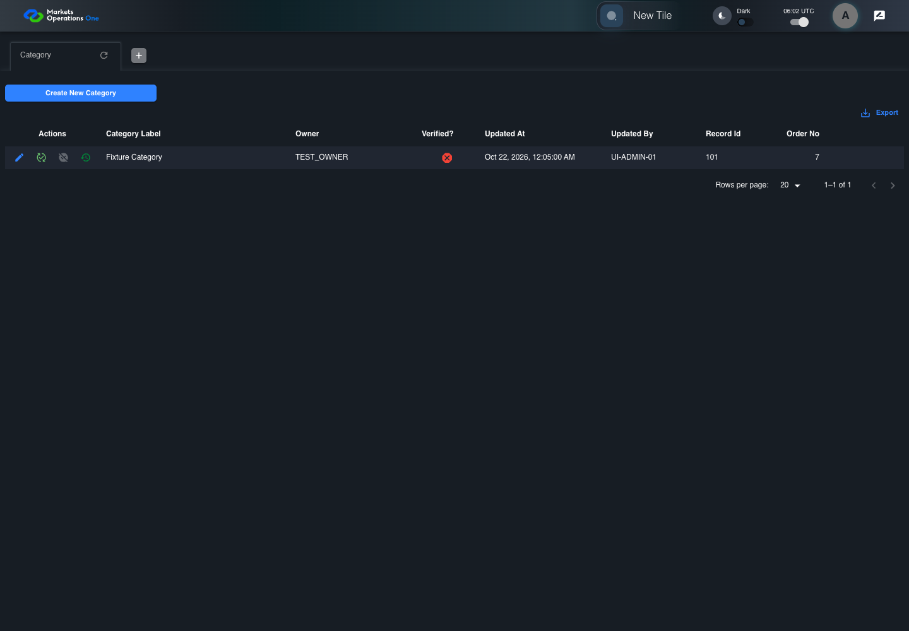
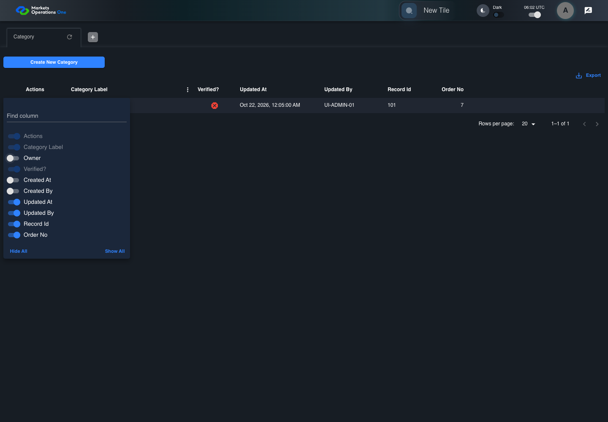
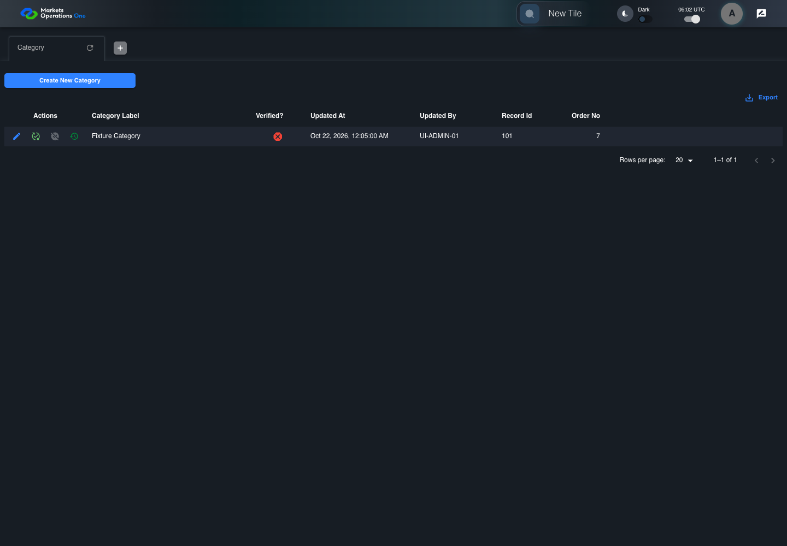

UX-069 administration boundary with step screenshots
PASS · application/run-050/ux-069-administration-boundary-with-step-screenshots-164ba2a5e13a-attempt-1 · ACTUAL_APPLICATION_LOCAL_SERVICES
Actual React administration screens. Controlled browser credentials, role, records, and BFF responses. Save probes persist the received UI payload without replacing it with expected values. Declared clock emulation controls field timers. Proposed accessibility and source-risk expectations remain separate from business approval.
2026-10-22T06:02:39.345Z to 2026-10-22T06:02:44.251Z
Assertions and result · Artifact manifest · Exact run inputs and source hashes
Result SHA-256:6a67e2c633fc292f6cf2a6788bdc0c221965cf443e3a4091cd9826bc387b58a5Screenshot capture: CAPTURED. Named frames: 7.
Step screenshot bindings: COMPLETE. 6/6 canonical steps have execution screenshots.
Bindings measure structural coverage only. They do not establish screenshot content quality or relevance.
Screenshot content review: NOT_REVIEWED. Recorded context: 0/7 frames. Identical image bytes: 2 repeated frames. Recorded context does not establish human visual review.
Canonical step timeline
Given ADMIN-A has C1 record101 with Owner "TEST_OWNER" in the category fixture
Execution: PASSED.
1. step-01 Visible state after step 1: Given ADMIN-A has C1 record101 with Owner "TEST_OWNER" in the category fixture
2026-10-22T06:02:41.892Z · 1440×1000
Step: /Users/lushevol/code/github/ratan-release-impact/workbench/tasks/ui-test-coverage-20261022/test-cases.md:14522
SHA-256:4cda09ec4c4a8b4e810bbc14af9fc587cddf67accdc4024e65e008d0004beaf9When ADMIN-A selects hidden visibility for the column labelled "Owner" in the Category grid on the administration page
Execution: PASSED.
2. step-02 Visible state after step 2: When ADMIN-A selects hidden visibility for the column labelled "Owner" in the Category grid on the administration page
2026-10-22T06:02:42.739Z · 1440×1000
Step: /Users/lushevol/code/github/ratan-release-impact/workbench/tasks/ui-test-coverage-20261022/test-cases.md:14523
SHA-256:314101a1c127de9b75cd0fef9047a689cf89ba5265182995380694c7c0bd239aThen The column labelled "Owner" in the Category grid on the administration page is hidden
Execution: PASSED.
3. step-03 Visible state after step 3: Then The column labelled "Owner" in the Category grid on the administration page is hidden
2026-10-22T06:02:42.837Z · 1440×1000
Step: /Users/lushevol/code/github/ratan-release-impact/workbench/tasks/ui-test-coverage-20261022/test-cases.md:14524
SHA-256:2a683feb9b31301148f239b66b54bd897e2b2862b21d44d340407450810dbf8bWhen ADMIN-A selects visible state for "Owner" in the Category grid column controls on the administration page
Execution: PASSED.4. step-04 Visible state after step 4: When ADMIN-A selects visible state for "Owner" in the Category grid column controls on the administration page
2026-10-22T06:02:43.463Z · 1440×1000
Step: /Users/lushevol/code/github/ratan-release-impact/workbench/tasks/ui-test-coverage-20261022/test-cases.md:14525
SHA-256:a7fd7e346f24e18aececf7b861953924542f2ddea735330848ce77a5703c221bThen The column labelled "Owner" in the Category grid on the administration page is visible
Execution: PASSED.5. step-05 Visible state after step 5: Then The column labelled "Owner" in the Category grid on the administration page is visible
2026-10-22T06:02:43.558Z · 1440×1000
Step: /Users/lushevol/code/github/ratan-release-impact/workbench/tasks/ui-test-coverage-20261022/test-cases.md:14526
SHA-256:ea6311185a22aa90535289882330ba731fb3fb411cbea855aaea2998ada2ac2dAnd The cell for Owner in category record101 contains "TEST_OWNER"
Execution: PASSED.
6. step-06 Visible state after step 6: And The cell for Owner in category record101 contains "TEST_OWNER"
2026-10-22T06:02:43.656Z · 1440×1000
Step: /Users/lushevol/code/github/ratan-release-impact/workbench/tasks/ui-test-coverage-20261022/test-cases.md:14527
SHA-256:4cda09ec4c4a8b4e810bbc14af9fc587cddf67accdc4024e65e008d0004beaf9Image bytes match frame 1. An unchanged image can be valid for consecutive assertions. This match does not establish correct step content.


Additional named frames

The final visible state after the named test assertions.
2026-10-22T06:02:43.758Z · 1440×1000Step: Test source: /Users/lushevol/code/github/ratan-release-impact/workbench/e2e/audit-specs/admin-ux.spec.ts:12
SHA-256:
4cda09ec4c4a8b4e810bbc14af9fc587cddf67accdc4024e65e008d0004beaf9Image bytes match frame 6. An unchanged image can be valid for consecutive assertions. This match does not establish correct step content.
Screenshots establish visible state only. Assertions and traces support functional claims.